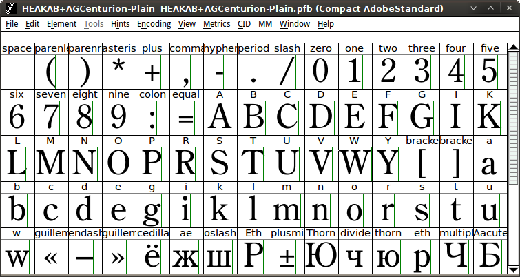
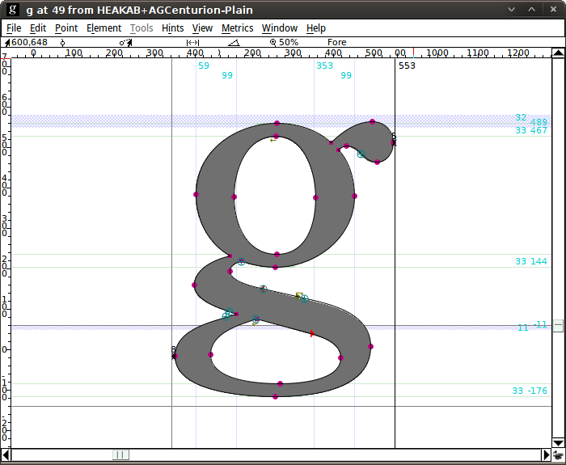
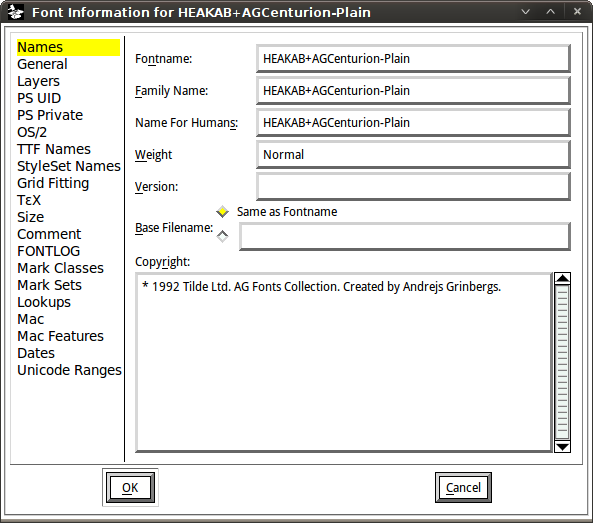

Cette fonctionnalité quelque peu controversée, l'extraction de polices intégrées à partir de documents, s'appuie sur la bibliothèque PoDoFo et ne fonctionne actuellement que pour les documents PDF. La prise en charge de XPS et SVG est prévue pour des versions ultérieures.
Pour l'utiliser
Si leur importation ultérieure dans Fontmatrix vous semble pertinente, faites-le.
Plusieurs choses doivent être mentionnées concernant cette fonctionnalité.
Tout d'abord, les polices sont rarement intégrées entièrement, donc ce que vous obtenez généralement est une police dite sous-ensemble, où seuls les glyphes réellement utilisés dans un document sont présents. Voici un exemple :

Ensuite, Fontmatrix enregistre ces polices au format PFB et stocke des informations utiles comme les instructions :

Enfin, pour les personnes soucieuses des droits d'auteur, Fontmatrix enregistre en fait cette information :

Veuillez noter : L'équipe Fontmatrix décourage fortement les utilisateurs d'enfreindre les droits d'auteur. Nous avons implémenté cette fonctionnalité pour le plaisir et l'éducation, et non pour réaliser un profit non autorisé du travail d'autrui. Si vous souhaitez créer une œuvre dérivée à partir d'une police dont la licence ne l'autorise pas explicitement, veuillez contacter le concepteur ou le fournisseur au préalable.